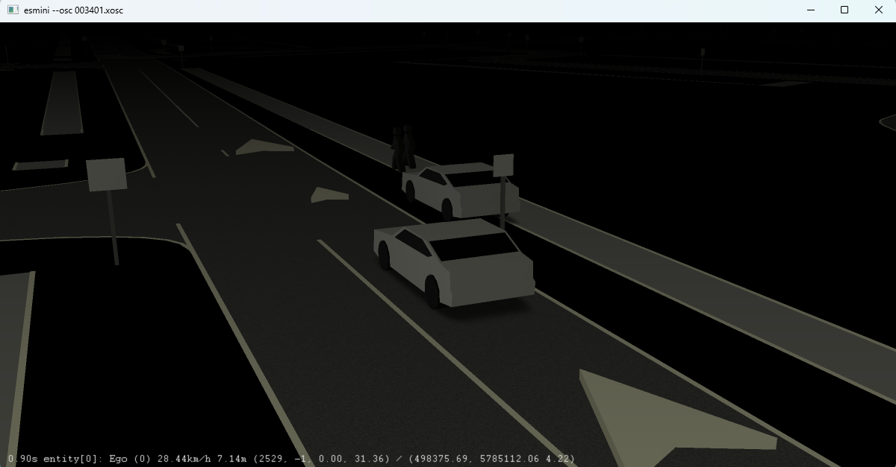

Master Thesis
I worked as part of the Scenario Team. My focus spanned the virtual validation and predictive safety of ADAS and AD functions. My work bridged state-of-the-art AI models with real-world automotive fleet data across my master thesis and industrial internship.
From Fleet Data to Simulation: Automated Scenario Generation using Foundation Models
Written grade 1.7 · Presentation grade 1.3
- End-to-End Fleet-to-Simulation Pipeline: Engineered a scalable pipeline that converts sparse, unstructured fleet data into structured digital twins ready for scenario-based testing.
- Multimodal Foundation Model Integration: Leveraged Vision-Language Models (VLMs) and Multimodal Large Language Models (MLLMs) for understanding, generation and other downstream tasks.
- Semantic Scenario Extraction & Vector Search: Implemented embedding-based scenario extraction and retrieval to identify edge cases and to enable text-based scenario querying.
- Dataset Curation & Multi-Metric Benchmarking: Designed a semi-automated data curation pipeline. Established an evaluation framework combining lexical metrics, semantic embeddings, and LLM-as-a-Judge.
- Agentic Workflows for Standards Compilation: Investigated Retrieval-Augmented Generation (RAG), ReAct-based agentic workflows, visual & textual prompt engineering for generation of ASAM OpenDRIVE (.xodr) and OpenSCENARIO (.xosc) simulation files
- Simulation Bridge: Representative and executable simulation files in esmini, IPG Carmaker and CARLA.
- Interactive Scenario Catalog: Designed and deployed a web-based scenario catalog allowing simulation engineers to search, 3D-visualize, edit, and export generated driving environments.
- Performance Benchmark: Achieved automated scenario generation in under 4 minutes per scenario, successfully handling complex road geometries, complex interactions and maneuvers.
- Leadership: Supervised a junior intern on ground-truth verification workflows and annotation validation pipelines.